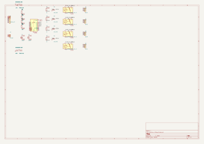
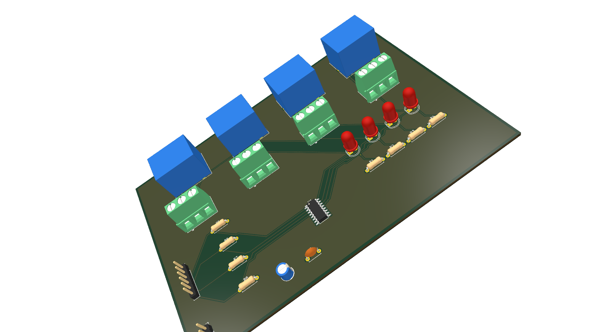
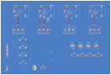
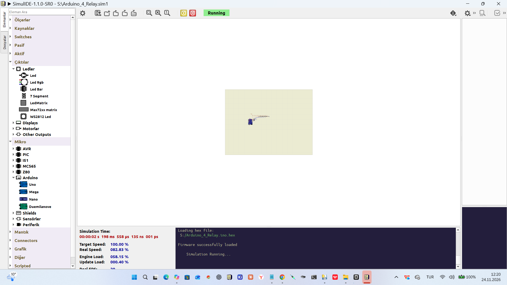
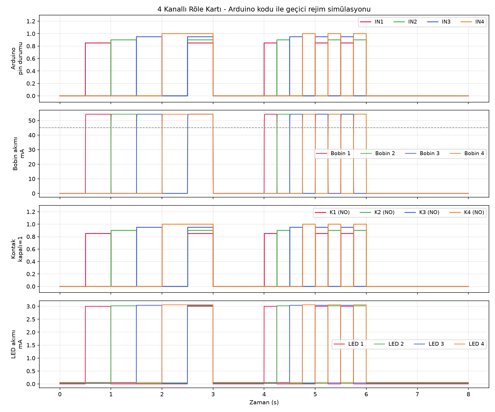

Bu projede ne öğreneceğiz?
Bir Arduino'nun dijital çıkışlarıyla röle bobinlerini doğrudan beslemek yerine ULN2003A sürücü entegresi kullanılır. Böylece Arduino'dan gelen denetim sinyalleri, 5 V ile beslenen dört ayrı röleyi yönetir.
Çalışma akışı
Arduino → D4–D7 sayısal çıkışları → ULN2003A → röle bobinleri → COM/NO/NC kontakları. ULN2003A içindeki koruma diyotları, bobin akımı kesildiğinde oluşan ters gerilim darbelerine karşı sürücü devresini korumaya yardımcı olur.
1. Rölelerin çalışma mantığını deneyin
Aşağıdaki etkileşimli gösterimde röleleri tek tek açabilir veya Arduino kodundaki zamanlama dizisini izleyebilirsiniz. Arduino pinleri ve kontakların durumu birlikte güncellenir. Bu bir eğitim canlandırmasıdır; elektriksel devre çözümü değildir.
COM–NC bağlı; COM–NO açık
COM–NC bağlı; COM–NO açık
COM–NC bağlı; COM–NO açık
COM–NC bağlı; COM–NO açık
Hazır — isterseniz röleleri elle açıp kapatın.
Durum: 0000 — Tüm kanallar kapalı.
Kontak mantığı: Röle enerjisizken COM–NC kapalı, COM–NO açıktır. Enerji verildiğinde COM–NO kapanır, COM–NC açılır. Buradaki yeşil ışık röle bobininin enerjili olmasını temsil eder.
2. Elektronik devre şeması
KiCad'de hazırlanmış şema, dört giriş sinyalinin sürücüye, bobinlere ve gösterge LED'lerine bağlantısını gösterir. Büyüterek inceleyebilir veya PDF olarak açabilirsiniz.

Pin bağlantıları
| Arduino | Röle girişi | J1 terminali |
|---|---|---|
| D4 | IN1 | 3 |
| D5 | IN2 | 4 |
| D6 | IN3 | 5 |
| D7 | IN4 | 6 |
| GND | Ortak toprak | 2 |
| 5 V | Besleme* | 1 |
* Röleler harici 5 V kaynaktan besleniyorsa J1 pin 1'i Arduino'nun 5 V pinine bağlamayın; GND ortak kalmalıdır.
3. Baskı devre (PCB)


Kaynak projede kart boyutu 140 × 95 mm. Üretim dosyaları ve delik dosyası Gerber klasöründe bulunuyor. Bu sayfadaki paylaşım, kartın gerçek üretim veya şebeke güvenliği onayı anlamına gelmez.
Tasarım raporları: Birlikte gelen KiCad ERC ve DRC raporlarında sıfır hata ve sıfır uyarı/ihlal kayıtlı. Bu sonuçlar fiziksel güvenlik, tüm tasarım kuralları veya gerçek çalışmanın doğrulandığı anlamına gelmez; bazı kurallar raporda göz ardı edilmiş.
4. Arduino kaynak kodu
Program açılışta tüm röleleri kapatır, dört kanalı sırayla açar, tümünü birlikte denetler ve ardından kovalamaca dizisi çalıştırır. Gerçek kod aşağıdadır.
/*
* 4 Kanallı Röle Kartı - Arduino Uno demo yazılımı
* ------------------------------------------------
* Bağlantı (J1):
* J1-1 +5V -> Harici besleme kullaniliyorsa baglama; J2 uzerinden 5V ver
* J1-2 GND -> Arduino GND
* J1-3 IN1 -> D4
* J1-4 IN2 -> D5
* J1-5 IN3 -> D6
* J1-6 IN4 -> D7
*
* ULN2003A girişi HIGH olduğunda ilgili röle enerjilenir (aktif-YÜKSEK).
* Röle kontakları COM/NO/NC için J3..J6 vidalı terminallerini kullanın.
* Bu kartin 230V guvenligi dogrulanmadi. Sebeke gerilimi baglamayin.
*/
const byte RELAY_PINS[4] = {4, 5, 6, 7};
const byte RELAY_ON = HIGH;
const byte RELAY_OFF = LOW;
void setRelay(byte channel, bool on) {
if (channel >= 4) return;
digitalWrite(RELAY_PINS[channel], on ? RELAY_ON : RELAY_OFF);
}
void allOff() {
for (byte i = 0; i < 4; i++) setRelay(i, false);
}
void allOn() {
for (byte i = 0; i < 4; i++) setRelay(i, true);
}
void printState(const char* label) {
Serial.print(label);
Serial.print(" -> ");
for (byte i = 0; i < 4; i++) {
Serial.print(digitalRead(RELAY_PINS[i]) == RELAY_ON ? '1' : '0');
}
Serial.println();
}
void setup() {
Serial.begin(9600);
for (byte i = 0; i < 4; i++) pinMode(RELAY_PINS[i], OUTPUT);
allOff(); // açılışta tüm röleler kapalı
printState("Baslangic");
}
void loop() {
// Sıralı tekil açma: her kanal 0.5 s
for (byte i = 0; i < 4; i++) {
setRelay(i, true);
printState("Tekil");
delay(500);
setRelay(i, false);
}
// Hepsi açık, sonra kapalı
allOn();
printState("TumuAcik");
delay(500);
allOff();
printState("TumuKapali");
delay(1000);
// Kovalamaca (chase): 8 x 0.25 s
for (byte step = 0; step < 8; step++) {
allOff();
setRelay(step % 4, true);
if (step >= 4) setRelay((step + 2) % 4, true);
printState("Kovalamaca");
delay(250);
}
allOff();
printState("Bekleme");
delay(2000);
}
5. SimulIDE simülasyonu


Orijinal SimulIDE devresini masaüstündeki SimulIDE uygulamasında açabilirsiniz. Simülasyon dosyasıyla birlikte derlenmiş Arduino HEX dosyasını da alın; ikisi aynı klasörde bulunmalıdır.
SimulIDE projesi (.sim1)SimulIDE için HEX dosyasıNot: SimulIDE çalışması bu sayfanın içinde değil, SimulIDE uygulamasında gerçekleşir. Ekran görüntüsü ve proje dosyası kaynak paketten alınmıştır; burada yeniden çalıştırma testi yapılmadı.
6. Wokwi ile canlı Arduino laboratuvarı
Arduino Uno ile dört röleyi tarayıcıda deneyin. Bu laboratuvar, yukarıdaki KiCad kartının D4–D7 pin düzenini ve aynı Arduino kaynak kodunu kullanır. Wokwi'deki sanal röleler gerçek ULN2003A + PCB'nin birebir modeli değildir.
Wokwi'de yeni Arduino laboratuvarı aç Arduino kodunu indir Bağlantı çizimini indir Kurulum adımlarını oku
Nasıl başlatılır? Wokwi'de yeni Arduino Uno projesi açın. sketch.ino ve diagram.json dosyalarının içeriğini aynı isimli sekmelere yapıştırıp simülasyonu başlatın. Dört röle sırasıyla ve birlikte çalışacaktır. Bu Wokwi sürümünün tarayıcıda çalıştırılması ayrıca doğrulanmalıdır.
7. Proje dosyalarını indirin
Kaynakları tek seferde indirebilir ya da yalnızca ihtiyacınız olan dosyayı seçebilirsiniz. ZIP dosyası KiCad, Arduino, SimulIDE, simülasyon grafikleri, Gerber katmanları ve teknik raporları içerir.
Orijinal proje dosyaları ve üretim çıktıları · çevrimdışı kullanılabilir.
Dosyaları ayrı ayrı indirin

Gerber notu: Tek başına .gbrjob dosyası PCB üretimi için yeterli değildir. Gerber katmanlarının tamamı ve delik dosyası ZIP içindeki gerber/ klasöründedir. Bu üretim dosyaları fiziksel olarak onaylanmış değildir.